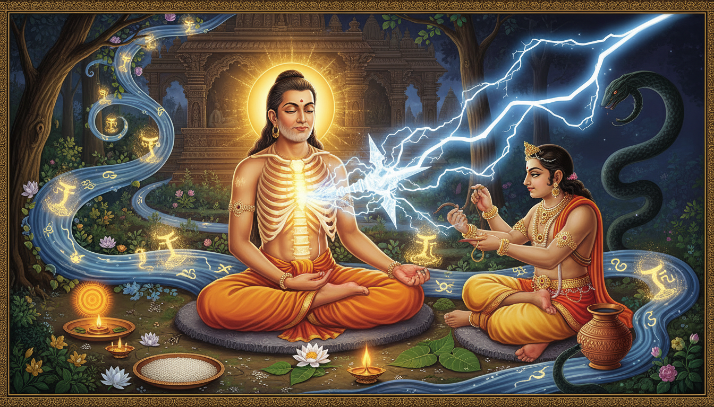

कुछ समस्याएँ छोटी गलती जैसे सामने नहीं आतीं। वे वृत्र की तरह घेर लेती हैं—वैदिक कल्पना में वृत्र रुकावट, घेराव और सूखे का प्रतीक है। वे आत्मविश्वास को निगल जाती हैं, अवसर को सूखा देती हैं, रिश्तों में विष घोलती हैं और योग्य मनुष्य को भी असहाय महसूस करा देती हैं। आप जानते हैं कि क्या करना है, फिर भी डर आपकी इच्छा-शक्ति के चारों ओर फन लपेट लेता है।

महर्षि दधीचि की कथा इसी डर का अद्भुत वैदिक उत्तर है। पुराणों में एक ऐसे ऋषि का उल्लेख है जिनकी अस्थियाँ इंद्र का वज्र बनीं—वह अद्भुत वाज्पतिक अस्त्र, जिसने वृत्र को काटा। लेकिन दधीचि की शक्ति की शुरुआत हिंसा से नहीं हुई। उसकी शुरुआत शिव-कृपा, महामृत्युंजय साधना, घोर तपस्या और इस विराट निर्णय से हुई कि व्यक्तिगत बल अब दूसरों की रक्षा बन जाए।
यह एक अंतिम ब्लॉग पोस्ट है, कोई आंतरिक नोट नहीं। यह दधीचि की कथा को व्यावहारिक उपाय-प्रणाली में बदलती है—उन लोगों के लिए जो लगातार डर, छिपे विरोध, राहु-केतु जैसी रुकावट, हड्डी और मज्जा की कमजोरी, कार्यस्थल की राजनीति, आकस्मिक संकट या अदृश्य आक्रमण के भय से गुज़र रहे हैं। इसमें मिथक, उपाय-ज्योतिष, आयुर्वेदिक अस्थि-रक्षा, दुर्लभ शिव और नारायण कवच प्रयोग, तथा सीमाबद्ध गूढ़ रक्षा-विधियाँ मिली हैं। कृपया इन अभ्यासों को चिकित्सा, मानसिक स्वास्थ्य, कानूनी सलाह और सामान्य व्यावहारिक कर्तव्य के साथ रखें। ये अभ्यास साहस और स्पष्टता बढ़ाते हैं; ये पेशेवर मदद का विकल्प नहीं हैं।
१. कथा: वह ऋषि जिनकी रीढ़ वज्र बनी
दधीचि अथर्वन के वंश में जुड़े, शिव-भक्त, ऋग्वैदिक दृष्टा और देवताओं के महान रक्षक के रूप में स्मरण किए जाते हैं। उनका नाम ज्ञान, तप और असाधारण मानसिक स्थिरता से जुड़ा है।
प्रसिद्ध वज्र-कथा में देवलोक संकट में है। त्वष्टा का पुत्र वृत्र एक ही उद्देश्य लेकर उठता है: इंद्र और वैश्विक व्यवस्था को बंदी बना ले। वृत्र केवल राक्षस नहीं है; वह रुकावट का स्वरूप है। वह शक्ति, जल, वाणी और स्वतंत्रता को अपने घेरे में ले लेता है।
इंद्र और देवता निराश हो जाते हैं। वे भगवान विष्णु से मार्ग पूछते हैं। विष्णु एक अजीब शर्त बताते हैं: वृत्र को मारने वाला अस्त्र महर्षि दधीचि की वज्रधारी अस्थियों से बने, इसके अतिरिक्त कोई उपाय नहीं है।
देवता उसी ऋषि के पास जाते हैं जिन्हें इंद्र ने एक बार अन्याय भी किया था। दधीचि इनकार नहीं करते, लेकिन एक विनती करते हैं: पहले उन्हें सभी पुण्य नदियों के दर्शन और स्नान का अवसर दिया जाए। वे चाहते हैं कि उनका त्याग शुद्ध, पूर्ण और जल्दबाज़ी से रहित हो।
इंद्र तब समय का चमत्कार करता है। वह नैमिषारण्य में सभी पवित्र जलों को एकत्र कर देता है, जिससे दधीचि को अलग-अलग तीर्थों पर जाने की देरी न हो। दधीचि गहरी ध्यान-अवस्था में प्रवेश करते हैं, प्राण छोड़ते हैं और अपना शरीर अर्पित कर देते हैं। विश्वकर्मा उनकी रीढ़ से वज्र बनाते हैं। इंद्र वज्र उठाता है और वृत्र का अंत करता है। रोशनी लौटती है; बंद जल फिर बहने लगता है।
एक अन्य पौराणिक रूप प्रतीक को और गहरा करता है। देवता एक समय अपने अस्त्र दधीचि की रक्षा में रखते हैं। लंबे समय तक उनकी रक्षा करने के बाद दधीचि उन अस्त्रों को पवित्र जल में घोलकर पी जाते हैं। जब देवता लौटते हैं, तो ऋषि बताते हैं कि उनकी शक्ति अब उनकी अस्थियों का हिस्सा बन चुकी है। देवताओं को उनका बल लौटाने के लिए दधीचि फिर स्वयं को अर्पित करते हैं, और उनकी अजेय अस्थियों से अनेक दिव्य अस्त्र बनाए जाते हैं।
यह कथा हमसे शारीरिक मृत्यु की नकल नहीं माँगती। यह बल का उच्च रूप दिखाती है। जब डर कहता है, “अपनी शक्ति छिपा लो,” तो दधीचि कहते हैं, “अपनी शक्ति को उपयोगी बनाओ।” जब अहंकार कहता है, “कठोर और प्रतिशोधी बन जाओ,” तो वज्र कहता है, “दृढ़ और स्पष्ट रहो।” इस परंपरा में रक्षा निर्दयता नहीं है। यह इतनी स्थिर धर्म-चेतना है कि रुकावट उसके चारों ओर फँस न सके।
२. यह कथा आधुनिक भय से कैसे जुड़ती है
| आधुनिक संघर्ष | वृत्र से समानता | दधीचि का पाठ |
|---|---|---|
| छिपा विरोध | शत्रु स्पष्ट नहीं दिखता | छाया से मत लड़ो; स्पष्ट अभिलेख और शांत सीमा बनाओ |
| लगातार चिंता | डर सीने के चारों ओर लिपट जाता है | पहले श्वास और शिव-अभ्यास से पकड़ ढीली करो |
| हड्डी या मज्जा की कमजोरी | शरीर का आंतरिक स्तंभ कमजोर लगता है | चिकित्सा, पोषण, सूर्य और अनुशासन मिलाओ |
| कार्यस्थल की साज़िश | छोटी राजनीति दीवार बन जाती है | कौशल, प्रलेखन और समय तुम्हारा वज्र बनें |
| आध्यात्मिक संकट | अदृश्य शक्तियों से घिरे होने का भय | कवच, मंत्र और नैतिक गूढ़ अभ्यास लो—प्रतिशोध नहीं |
| थकान | शरीर ही रणभूमि लगता है | और वीरता माँगने से पहले बल लौटाओ |
| निर्णय में अकड़ | विकल्प बंद लगते हैं | आज एक ईमानदार कार्य चुनो |
वृत्र सदा बाहर नहीं होता। कई बार वह भीतर की वह आवाज़ होता है जो कहती है, “तुम बहुत देर हो गए, बहुत कमजोर हो और बहुत असुरक्षित हो।” दधीचि का उत्तर इनकार नहीं है। वे खतरे को स्वीकार करते हैं, दिव्य सहायता माँगते हैं, शुद्धि पूरी करते हैं और फिर पूर्ण स्पष्टता से कार्य करते हैं।
३. अजेय रक्षा का दर्शन
दधीचि की रक्षा चार स्तरों पर बनती है।
- बल से पहले शुद्धि। वे अधखिंचे क्रोध से युद्ध नहीं करते। पहले तीर्थ, जल और मंत्र से अपनी भावनाएँ स्पष्ट करते हैं।
- सेवा में बल। उनकी अस्थियाँ विश्व की रक्षा का कवच बनती हैं, अहंकार का अस्त्र नहीं।
- समर्पण, पर स्वाहा नहीं। वे शरीर देते हैं, लेकिन धर्म, शांति और उद्देश्य नहीं खोते।
- विनाश नहीं, रूपांतरण। वज्र वृत्र को काटता है ताकि जल फिर बह सके। सच्ची रक्षा जीवन को लौटाती है।
कवच का वैदिक विचार भी यही है। कवच कोई जादुई दीवार नहीं है जो कर्तव्य समाप्त कर दे। कवच ध्यान का क्षेत्र है—मंत्र, श्वास, अनुशासन, स्मृति और ईश्वर-चिंतन मिलकर मन को इतना स्थिर करते हैं कि वह आसानी से काँपने लगे यही नहीं।
४. उपाय-ज्योतिष: वृत्र पैटर्न को समझना
किसी एक ग्रह या भाव से अपना निदान मत करो। योग्य ज्योतिषी पूरी कुंडली, दशा, गोचर, वर्ग कुंडली और व्यावहारिक परिस्थिति देखता है। फिर भी दधीचि-कथा एक उपयोगी प्रतीकात्मक नक्शा देती है।
दधीचि का उपाय-सूची
| कुंडली संकेत | संभावित अनुभव | दधीचि उपाय |
|---|---|---|
| राहु या केतु का प्रबल प्रभाव | आकस्मिक भय, गूढ़ संवेदनशीलता, सर्प जैसी छवि, भ्रम | राहु-केतु शांति, नैतिक रक्षा, भूमि से जुड़ाव |
| पीड़ित मंगल | क्रोध, कमजोर सीमा, उत्तेजित प्रतिक्रिया | हनुमान-शिव साहस, श्वास-नियंत्रण, अहिंसक दृढ़ता |
| कमजोर या पीड़ित सूर्य | अधिकार से संघर्ष, आत्मविश्वास और प्राण शक्ति में कमी | सूर्य अर्घ्य, नैतिक नेतृत्व, अस्थि-मज्जा देखभाल |
| शनि का षष्ठ, अष्टम या द्वादश भाव से संबंध | लंबा संघर्ष, दीर्घ थकान, छिपे विरोध | नियमित दस्तावेज़ीकरण, सेवा, शिव-धैर्य |
| अष्टम भाव की प्रबलता | संकट, रूपांतरण, मृत्यु-भय | महामृत्युंजय, चिकित्सा, मानसिक सहायता |
| चंद्रम पर दबाव | चिंता, नींद की गड़बड़ी, भावनात्मक बाढ़ | सायं जल-अभ्यास, दिनचर्या, परामर्श |
| दशम भाव पीड़ित | कीर्ति पर आघात और करियर रुकावट | नारायण कवच, कौशल वृद्धि, व्यावसायिक नैतिकता |
ज्योतिष का उद्देश्य तुम्हें डराना नहीं, समझदार बनाना है। यदि कुंडली में वृत्र जैसा दबाव दिखे, तो उपाय यह नहीं कि शत्रुओं पर दिन-रात विचार करो। उपाय यह है कि तुम डर को अधिक ग्रहण न करो और धर्म में अधिक सक्रिय हो जाओ।
५. आयुर्वेद: अस्थि धातु की देखभाल
दधीचि की अस्थियाँ अजेय स्पष्टता का प्रतीक बनीं। आयुर्वेद में हड्डी को अस्थि धातु कहा जाता है। जब अस्थि धातु का पोषण ठीक नहीं होता, तो जीवन शारीरिक और मानसिक दोनों रूपों में भंगुर लगने लगता है।
पारंपरिक आयुर्वेदिक सहायता में अक्सर शामिल होता है:
- प्रकृति के अनुसार गर्म तिल तेल की मालिश,
- विशेषज्ञ की सलाह से कैल्शियम और प्रोटीन युक्त भोजन,
- स्वास्थ्य के अनुसार गाय का दूध या उपयुक्त वैकल्पिक दूध,
- तिल, खजूर, घी, मूंग और अच्छी तरह पकी हरी सब्जियाँ,
- केवल योग्य वैद्य की देखरेख में अश्वगंधा, शतावरी, गुडूची, हडजोड़ या प्रवाल पिष्टि जैसी औषधियाँ,
- विटामिन-डी के लिए सुबह की धूप,
- बल बढ़ाने वाले सुरक्षित व्यायाम,
- गहरी नींद और देर रात की उत्तेजना में कमी।
यदि हड्डी में दर्द हो, फ्रैक्चर का खतरा हो, अकारण कमजोरी बढ़े, दाँत जल्दी खराब हों, सुन्नता महसूस हो या अत्यधिक थकान रहे, तो इसे केवल आध्यात्मिक समस्या मानकर बैठने से पहले डॉक्टर से मिलें। वज्र शरीर की शुरुआत सही चिकित्सा से होती है।
अस्थि-बल की दैनिक दिनचर्या
| समय | अभ्यास |
|---|---|
| सूर्योदय | जल अर्पण, सुरक्षित धूप में दस मिनट, सौम्य खिंचाव |
| दोपहर | प्रोटीन व खनिज युक्त भोजन, मुद्रा सुधार, पर्याप्त जल |
| सायं | यदि उपयुक्त हो तो पैरों में तेल मालिश, डरावनी खबरों से दूरी |
| रात्रि | मध्यरात्रि से पहले नींद, उपयुक्त गुनगुना दूध या जड़ी-चाय |
| साप्ताहिक | सप्ताह में दो बार बल व्यायाम, एक बार शिव-दीपक |
६. महामृत्युंजय: जो मंत्र भीतर का स्तंभ फिर खड़ा करता है
एक पौराणिक वृत्तांत के अनुसार दधीचि का शरीर एक बार नष्ट किया गया, फिर शिव-कृपा और महामृत्युंजय से उनका पुनर्निर्माण हुआ। इसीलिए वे उस व्यक्ति के लिए शक्तिशाली आदर्श हैं जो पूरी तरह टूटने के बाद फिर से खड़ा होना चाहता है।
मंत्र है:
ॐ त्र्यम्बकं यजामहे सुगन्धिं पुष्टिवर्धनम् उर्वारुकमिव बन्धनान् मृत्योर्मुक्षीय मामृतात्
इसे इस भाव से बोलो मानो काँपते स्तंभ को सीधा कर रहे हो:
- रीढ़ सीधी रखकर आराम से बैठें।
- हथेली हृदय या छाती के केंद्र पर रखें।
- चार गिनती में श्वास लें, छह गिनती में छोड़ें।
- मंत्र का जाप ग्यारह, सत्ताईस या एक सौ आठ बार करें।
- जाप के बाद कहें: “मेरा उपचार हो, कठोर नहीं। मेरा बल धर्म की रक्षा करे।”
यह मृत्यु से बचने की गारंटी नहीं है। यह अनित्य का सामना करते हुए उपस्थित चेतना खोने न देने का अभ्यास है। यही साहस दधीचि में सबसे स्पष्ट दिखता है।
७. दुर्लभ दधीचि वज्र कवच अनुष्ठान
यह अनुष्ठान सुरक्षित, अहिंसक और घर पर करने योग्य है। इसमें वज्र का प्रतीक रखा जाता है—कोई छोटा स्टील वस्तु, स्फटिक, शंख या वज्र का स्पष्ट चित्र—जो अविचल स्पष्टता का स्मरण कराए।
आवश्यक वस्तुएँ
- वज्र प्रतीक, स्फटिक, स्टील वस्तु या स्पष्ट चित्र,
- जल,
- सफेद फूल या बिल्व पत्र,
- घी या तिल तेल का दीपक,
- थोड़े तिल,
- शांत स्थान।
विधि
- सोमवार सायं, प्रदोष, शिवरात्रि या स्थानीय पंचांग के अनुसार किसी शुभ शिव-समय को चुनें।
- वज्र प्रतीक को शिव के चित्र या सरल वेदी पर रखें।
- जल तथा सफेद फूल या बिल्व पत्र अर्पित करें।
- दीपक जलाएँ और एक मिनट स्थिर रहें।
- ॐ नमः शिवाय का जाप एक सौ आठ बार करें।
- महामृत्युंजय मंत्र का जाप ग्यारह या सत्ताईस बार करें।
- प्रतीक हाथ में लेकर कहें: “मैं दृढ़ रहूँ। मैं निर्दय न बनूँ। डर मेरा गुरु न बने।”
- थोड़ा जल पौधे की जड़ में डालें या वेदी पर सम्मानपूर्वक अर्पित करें।
- इस सप्ताह की एक सीमा लिखें: कोई निंदा नहीं, कोई उत्तेजित प्रतिशोध नहीं, एक विनम्र इनकार, एक चिकित्सक की नियुक्ति, एक कानूनी या व्यावसायिक कदम।
यह अनुष्ठान तब पूरा माना जाता है जब भीतर का निर्णय नैतिक कर्म बन जाए।
८. नैमिषारण्य जल-साधना
दधीचि की अंतिम विनती पवित्र नदियों का आशीर्वाद लेने की थी। इंद्र ने नैमिषारण्य में उन जलों को एकत्र किया। इस सरल गृह-प्रयोग में जल शुद्धि की स्मृति बन जाता है।
- स्वच्छ पात्र में जल भरें।
- उसे रातभर या अभ्यास के समय वेदी पर रखें।
- सुबह पात्र पकड़कर कहें: “धर्म की प्रत्येक पवित्र धारा मेरे निर्णय से बहे।”
- थोड़ा जल पौधे को दें और यदि जल स्वच्छ तथा उपयुक्त हो तो थोड़ा स्वयं पिएँ।
- उस दिन रात से पहले एक रुकावट हटाने वाला कार्य करें: अव्यवस्थित फाइल सुधारें, टला हुआ मेल भेजें, स्वास्थ्य जाँच बुक करें, आवश्यकता हो तो क्षमा याचना करें या कोई अधूरा कार्य पूरा करें।
यह अभ्यास रहस्यवाद को पलायन नहीं बनने देता। जल पवित्र है, और पूरा किया गया कर्तव्य भी।
९. कम ज्ञात गूढ़ रक्षा-प्रयोग
ये प्रतीकात्मक और मानसिक सहायक उपाय हैं। इनका उपयोग किसी को डराने, नियंत्रित करने या हानि पहुँचाने के लिए कदापि न करें। यदि भय असहनीय हो, तो चिकित्सक या मनोचिकित्सक से भी मिलें।
१. वज्र सीमा दृश्यीकरण
अपने चारों ओर श्वेत बिजली का एक शांत चक्र कल्पित करें। प्रत्येक श्वास पर उसके तीक्ष्ण किरण सीधे होते जाएँ। प्रत्येक निकास पर उसका वृत्त चिकना होता जाए। इस वृत्त में किसी शत्रु का चेहरा मत रखो। यह सीमा का अभ्यास है, घृणा का नहीं।
२. कवच यंत्र
स्वच्छ कागज़ या ताँबे पर एक वृत्त बनाएँ और उसके चारों ओर आठ या नौ कमल-दल बनाएँ। केंद्र में वज्र का चिह्न रखें। केवल अपना सकारात्मक संकल्प लिखें—किसी दूसरे का नाम नहीं। उस पर ॐ नमो भगवते वासुदेवाय या ॐ नमः शिवाय का एक सौ आठ बार जाप करें। इसे सफेद या पीले वस्त्र में लपेटकर कार्यस्थल के पास इकतालीस दिन रखें।
३. नारायण कवच पाठ
दधीचि को पारंपरिक रूप से रक्षा-विद्या से जोड़ा जाता है, और नारायण कवच वैदिक रक्षा का प्रसिद्ध स्तुति-काव्य है। इसका थोड़ा पाठ भी मन को स्थिर करता है। गुरुवार या कठिन बैठक से पहले इसे पढ़ें या सुनें, फिर तीन गहरे श्वास लेकर ही उत्तर दें।
४. बिल्व और नमक शुद्धि
एक सफेद कपड़े में बिल्व पत्र, थोड़ा सेंधा नमक और तिल रखें। इसे प्रवेश-द्वार के पास एक सप्ताह रखें। बाद में नमक को सम्मानपूर्वक हटाएँ और बिल्व पत्र किसी पेड़ के नीचे रखें। यह स्मरण दिलाता है कि रक्षा की शुरुआत सफाई, सजगता और घर में शांत प्रवेश से होती है।
५. फिटकरी सीमा
कई घर द्वार पर फिटकरी रखते हैं। यदि आप इस परंपरा को मानते हैं, तो दहलीज पर छोटा टुकड़ा रखें—किसी पर अभिशाप डालने के लिए नहीं, बल्कि इस स्मरण के लिए: मैं हर अशांति को अंदर नहीं आने दूँगा।
६. वज्र निद्रा-कवच
सोने से पहले बिस्तर के चारों ओर मुलायम श्वेत प्रकाश का हीरा खींचिए। कहिए: “मेरा विश्राम सुरक्षित है।” फिर फोन दूर रखें। लगातार सतर्कता अक्सर अदृश्य शत्रु से अधिक अपूर्ण नींद से जन्मती है।
७. अस्त्र-वापसी दान
एक कथा में दधीचि ने देवताओं के अस्त्र रखे और बाद में उन्हें रूपांतरित किया। तुम्हारे जीवन में अस्त्र या शक्ति कौशल, धन, ज्ञान या प्रभाव हो सकती है। महीने में एक बार जानबूझकर एक शक्ति समाज को लौटाओ: एक बात सिखाओ, एक उपयोगी वस्तु दान करो, एक व्यक्ति का मार्गदर्शन करो या एक उपयोगी संसाधन बाँटो। जो शक्ति बहती है, वह रक्षा बनती है; जो शक्ति जमा रहती है, वह चिंता बनती है।
१०. ग्रह-समय से जुड़ा उपाय सेट
समय के लिए अपने स्थानीय पंचांग देखें। उद्देश्य बिखरा हुआ अनुष्ठान-संग्रह नहीं, एक लय बनाना है।
| समय | ऊर्जा | अभ्यास |
|---|---|---|
| रविवार सुबह | सूर्य, प्राण, अधिकार | जल अर्घ्य, धूप, एक स्पष्ट और दृश्यमान कार्य |
| सोमवार सायं | शिव, उपचार, मानसिक स्थिरता | महामृत्युंजय, दीपक, वज्र प्रतीक |
| मंगलवार | मंगल, साहस और सीमा | हनुमान चालीसा या बीज मंत्र, शारीरिक बल, उत्तेजित वाणी नहीं |
| गुरुवार | गुरु, नैतिकता और मार्गदर्शन | नारायण कवच, अध्ययन, सद्परामर्श |
| शनिवार | शनि, अनुशासन और धैर्य | तिल दान, दस्तावेज़ व्यवस्था, सेवा |
| प्रदोष | शिव-कृपा | बिल्व अर्पण, ॐ नमः शिवाय, भय-सूची |
| ग्रहण के आसपास | राहु-केतु संवेदनशीलता | आवेशपूर्ण निर्णय टालें; भूमि से जुड़ाव और योग्य मार्गदर्शन |
आत्मविश्वास के लिए सूर्य अर्घ्य
सूर्योदय पर ताँबे या स्वच्छ स्टील के पात्र से जल अर्पित करें और ॐ सूर्याय नमः बोलें। जल धीरे-धीरे गिरने दें। फिर सात धीमे श्वास लें और कहें: “अधिकार मेरे लिए भय नहीं, उत्तरदायित्व बने।” यदि धूप चिकित्सकीय रूप से उपयुक्त नहीं है, तो दृश्यीकरण करें और स्वास्थ्य सलाह लें।
राहु-केतु भूमि-अभ्यास
जब मन अदृश्य खतरों में घूमने लगे, पाँच मिनट नई जानकारी खोजना बंद करें। पैरों को ज़मीन पर स्थिर रखें, जल पिएँ, ॐ रां राहवे नमः या ॐ कें केतवे नमः ग्यारह बार बोलें और एक तथ्य लिखें जिसे आप निश्चित रूप से जानते हैं। जो मन प्रमाण की ओर लौटता है, छाया-ग्रह उस पर उतना भ्रम नहीं रख पाते।
११. इकतालीस दिन की दधीचि साधना
जब आप किसी कठिन दौर के लिए तैयारी कर रहे हों, झटके के बाद उबर रहे हों, या कठोर बने बिना दृढ़ बनना चाहते हों, तो यह साधना करें।
| दिन | ध्यान | अभ्यास |
|---|---|---|
| १–७ | सुरक्षा और मरम्मत | चिकित्सक से मिलना, नींद, जल, रोज़ दीपक |
| ८–१४ | भय की सूची | तथ्य और भय अलग-अलग लिखें |
| १५–२१ | सीमा निर्माण | एक विनम्र इनकार, वज्र दृश्यीकरण |
| २२–२८ | शारीरिक बल | व्यायाम, धूप, पोषण, मुद्रा |
| २९–३५ | गूढ़ स्वच्छता | नमक-बिल्व शुद्धि, निंदा बंद, देर रात के मीडिया में कमी |
| ३६–४० | धर्म कर्म | एक कानूनी, चिकित्सकीय, करियर या पारिवारिक कदम |
| ४१ | समापन | शिव दीपक, कृतज्ञता, दान, अगले माह की योजना |
दैनिक आधार
- ॐ नमः शिवाय का ग्यारह बार जाप।
- महामृत्युंजय मंत्र का ग्यारह बार जाप।
- तीन मिनट धीमे श्वास।
- एक ठोस कार्य जो रुकावट हटाए।
- एक कार्य जो शरीर या कीर्ति की रक्षा करे।
१२. स्थितिवार उपाय
| स्थिति | दधीचि उपाय |
|---|---|
| छिपा विरोध | तथ्य, गवाह, दस्तावेज़, वज्र सीमा, कानूनी सलाह |
| अदृश्य आक्रमण का भय | कवच अभ्यास, भूमि से जुड़ाव, परामर्श, प्रतिशोधी प्रयोग नहीं |
| हड्डी की कमजोरी | डॉक्टर, पोषण, धूप, आयुर्वेदिक मार्गदर्शन, बल-व्यायाम |
| करियर में साज़िश | कौशल, मार्गदर्शक, नैतिक सीमाएँ, नारायण कवच |
| चिंता और अनिद्रा | सायं दिनचर्या, स्क्रीन नियंत्रण, श्वास, व्यावसायिक सहायता |
| आध्यात्मिक थकान | अनुष्ठानों का बोझ घटाएँ, नींद लौटाएँ, एक सरल शिव अभ्यास रखें |
| निर्णय में अकड़ | जल साधना और एक पूर्ण कार्य |
| विश्वासघात के बाद क्रोध | शिव स्थिरता, प्रतिक्रिया में देरी, अहं की नहीं धर्म की रक्षा |
१३. स्मरण रखें
दधीचि इसलिए अजेय नहीं हुए कि उन्होंने सबसे शक्तिशाली अस्त्र जमा कर लिया। वे इसलिए अजेय हुए कि उनका बल एक उच्च उद्देश्य के आगे पारदर्शी हो गया। जब देवताओं को स्वर्ग और पृथ्वी के बीच एक सेतु चाहिए था, तो उनका शरीर ही वह सेतु बन गया।
आपका वज्र क्रोध नहीं है, न निगरानी और न ही गुप्त प्रतिशोध। आपका वज्र उस व्यक्ति की निर्मल रीढ़ है जो पर्याप्त उपचारित, पर्याप्त अनुशासित और पर्याप्त सेवाभावी हो चुका है—इसलिए डर उसे धर्म भूलने पर मजबूर नहीं कर सकता।
ॐ नमः शिवाय। ॐ त्र्यम्बकाय नमः। ॐ नमो भगवते वासुदेवाय।
स्रोत
- विकिपीडिया: ऋषि श्रेणी
- विकिपीडिया: दधीचि
- Wisdomlib: दधीच की कथा
- Wisdomlib: वृत्र की कथा
- Sacred-texts: ऋग्वेद १.८४
- Sacred-texts: ऋग्वेद ७.५९
- विकिपीडिया: महामृत्युंजय मंत्र
- Wisdomlib: लिंग पुराण, क्षुप का पराजय
- Wisdomlib: शिव पुराण, क्षुव और दधीच संवाद
- Wisdomlib: विष्णु पुराण, नारायण कवच
- NCBI: कैल्शियम और अस्थि स्वास्थ्य
- NIH: विटामिन डी
- NCCIH: अश्वगंधा
- Drik Panchang: प्रदोष व्रत
- Drik Panchang: महाशिवरात्रि
- विकिपीडिया: नैमिषारण्य
- विकिपीडिया: वृत्र
Sources
No source URLs were returned by NotebookLM for this run.